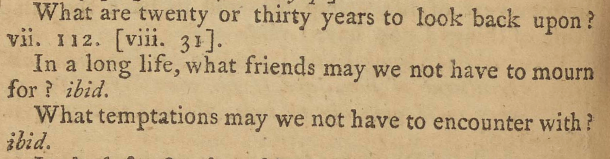

In a similar case, found in the section on “Example” on the opposite page, the reader is given a passage split into three sentiments:
What are twenty or thirty years to look back upon? vii. 112 [viii. 31].
In a long life, what friends may we not have to mourn for?
What temptations may we not have to encounter with?
These three lines are a selection from a speech by Aunt Hervey, given to comfort those who have lost someone who was still young. In these lines, she argues that we should not mourn the fact of a shorter life, writing,
“The Almighty, I hope, says she, has recieved and blessed my penitence, and I am happy. Could I have been more so, at the end of what is called a happy life of 20, or 30, or 40 years to come? And what are 20, or 30, or 40 years to look back upon? In half of any of these periods, what friends might I not have mourned for? what temptations from worldly prosperity might I not have encountered with?” (pp.111-112).
Living a longer life, she claims, would only add further mourning and additional temptations. The lines in Moral Sentiments are confusing, however, unless one actually returns to Aunt Hervey's remarks: Richardon's extraction from his novel, we might say, has failed.
Even the divison of lines within Moral Sentiments is confusing. The final quotation (“What temptations may we not have to encounter with?) can only make sense in the context of the earlier quotations, which reference “twenty or thirty years” and “a long life.” Just as the three lines necessitate a return to the context of the novel, the last line — in its commonplace form — necessitates the linear reading of the sentiments. In breaking up the sentiments, however, Richardson is trying to encourages the reader to see the final sentiment as isolatable and extractable, even though the reader might have to do some of that work themselves. The reader only has to add, mentally or materially, to the beginning of this last line for it to work independently:
“[In] twenty or thirty years… What temptations may we not have to encounter with?”
{Return to Tour Table of Contents}